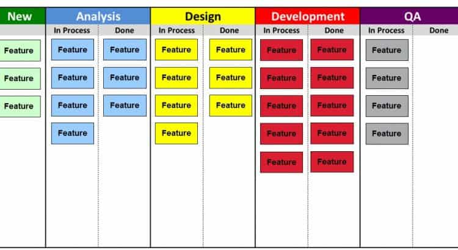

name: inverse class: center, middle, main-title # Filosofia Lean Software Laboratório de Programação --- # O que é? - Nasceu na década de 90, com o livro: "The Machine that Changed the World" - Inspirado no `Toyota Way` - pull systems, just-in-time, qualidade total, teoria das restrições, melhoria contínua e flexibilidade - Muito dessa filosofia foi introduzida no desenvolvimento de sistemas - muito inserida no desenvolvimento ágil --- # O que é? Definições* > Entregar, aumentando continuamente valor para o cliente > Continuamente diminuir o esforço gasto > No prazo mais curto possível > Com a melhor qualidade possível à jornada, não um destino .footnote[.black.bold[*]May e Tom Poppendieck] --- # O que é? Lean Manufacturing = > Filosofia que quando implementada reduz o tempo desde do pedido até a entrega ao cliente, eliminando fontes de desperdício no fluxo de produção* .footnote[.black.bold[*]Liker: Became Lean. New York Press] --- ##Princípios Lean aplicados ao software - Elimine desperdícios - Inclua qualidade no processo - Crie conhecimento - Adie decisões e comprometimentos - Entregue o quanto antes - Respeito as pessoas e "empower" a equipe - Otimize o Todo --- ## Elimine desperdícios > Elimine tudo aquilo que não agrega valor para o cliente final e que não são percebidos pelo cliente Exemplo: passos extras, processos pesados, burocracia, documentação excessiva, trabalhos pacialmente prontos, .... --- ## Elimine desperdícios - Requisitos cedo demais - Processos a mais, passos a mais - Funcionalidades a mais - Troca de tarefas entre membros da equipe - Atrasos - Erros: > Inspecionar para prevenir é bom. <br/>Inspecionar para achar defeitos é desperdício - Organização de informações --- ## Qualidade embutida - Inegociável > Um produto possui qualidade quanto o cliente o experimenta e diz: "Isso era exatamente o que eu queria" - Possui: - boas arquiteturas - alto nível de usabilidade e facilidade de uso - fácil de dar manutenção, adaptar e estender --- ## Criar conhecimento Compartilhar lições aprendidas. Compartilhar experiências - Desenvolvimento iterativo - Equipes concisas - Treinamento - Criação de padrões e roteiros - Revisão de código (code reviews) --- ## Adiar decisões > Retardar decisões até que possam realmente ser construídas com base em informações sólidas - Tendem a ser mais acertadas - Evitam re-trabalho --- ## Entregar rápido - Colher feedback - Aprender com erros - Cliente recebe hoje e não ontem --- ## Respeitar as pessoas - Envolver todos nas decisões técnicas, inclusive desenvolvedores - Auto-gestão - Trabalho em equipe - Feedback --- ## Otimizar o todo - Utilize métricas - valorize o desempenho em equipe - Meça: - Satisfação do cliente + entendimento de suas necessidades - Tempo de ciclo --- ## Lean > Desenvolvimento Lean é correspondente à entrega de versões refinadas e incrementais do software em intervalos de tempo regulares > Uma forma simples de controlar o just-in-time da filosofia é usando o Kanban --- ## Kanban 